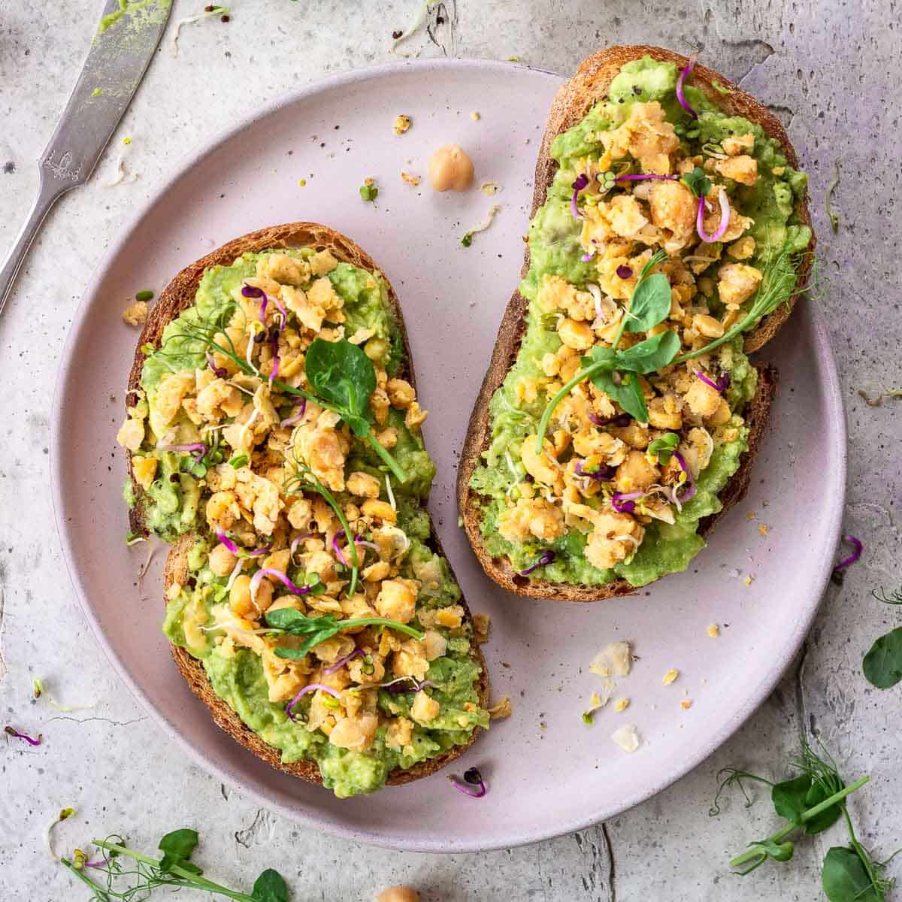

........................................................................
Meyer Lemon Avocado Toast
Meyer Lemon Avocado Toast

This recipe provides a refreshing and flavorful twist on the classic
avocado toast, featuring Meyer lemon for an added zest.
Ingredients:
- Avocado: Ripe and mashed.
- Meyer Lemon: Juice and zest for a bright,
citrusy flavor.
- Bread: Toasted slices of your choice.
- Seasonings: Salt, pepper, and red pepper flakes
for added spice.
- Olive Oil: For drizzling.
Instructions:
- Prepare the Avocado: Mash the avocado in a bowl.
Add Meyer lemon juice, zest, salt, and pepper to taste.
- Toast the Bread: Toast slices of your favorite
bread until golden brown.
- Assemble the Toast: Spread the avocado mixture
onto the toasted bread slices.
- Finish and Serve: Drizzle with olive oil and
sprinkle with red pepper flakes. Serve immediately.
Home